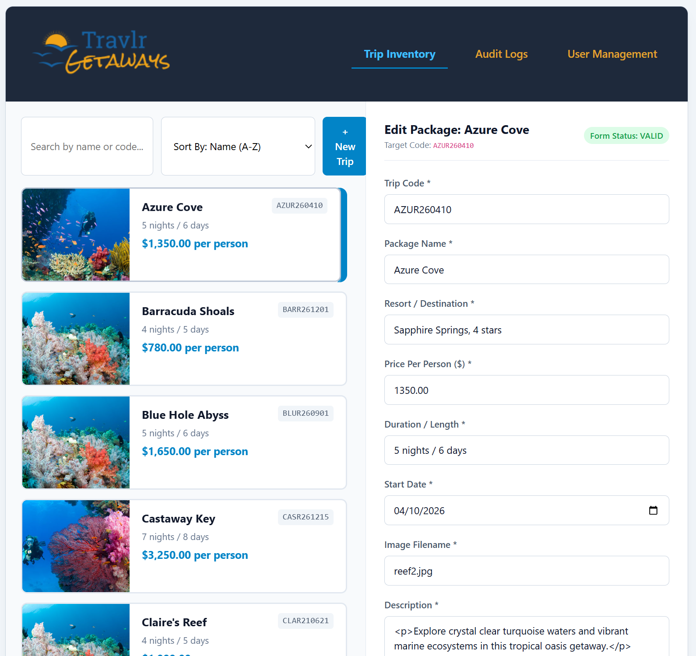
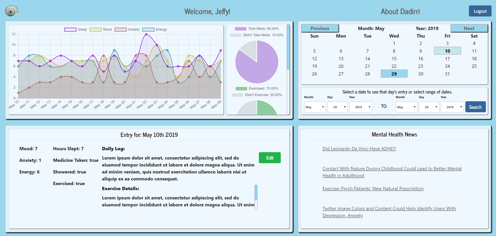
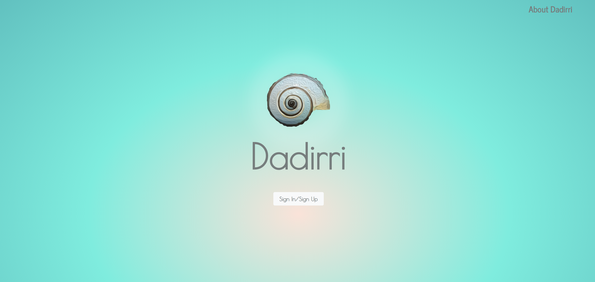
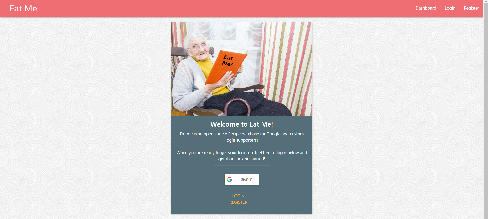
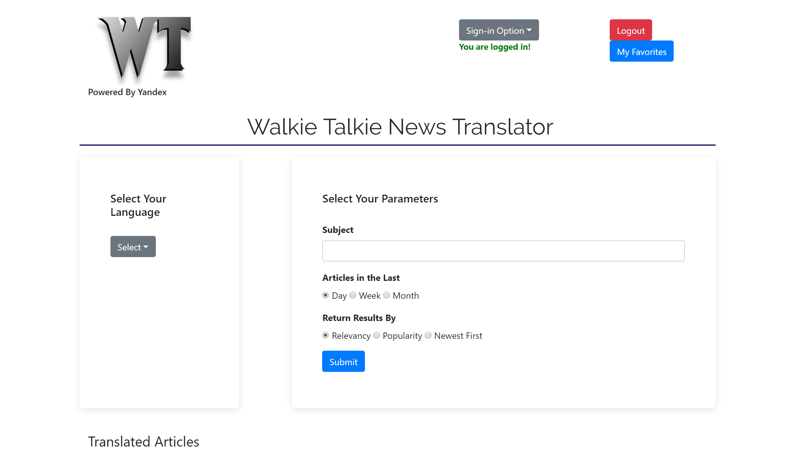
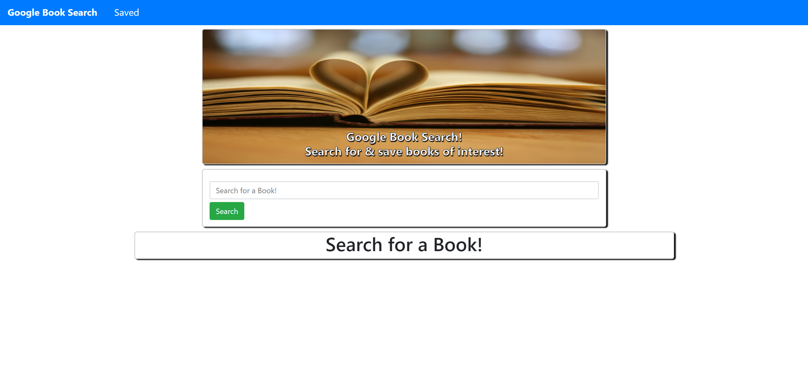
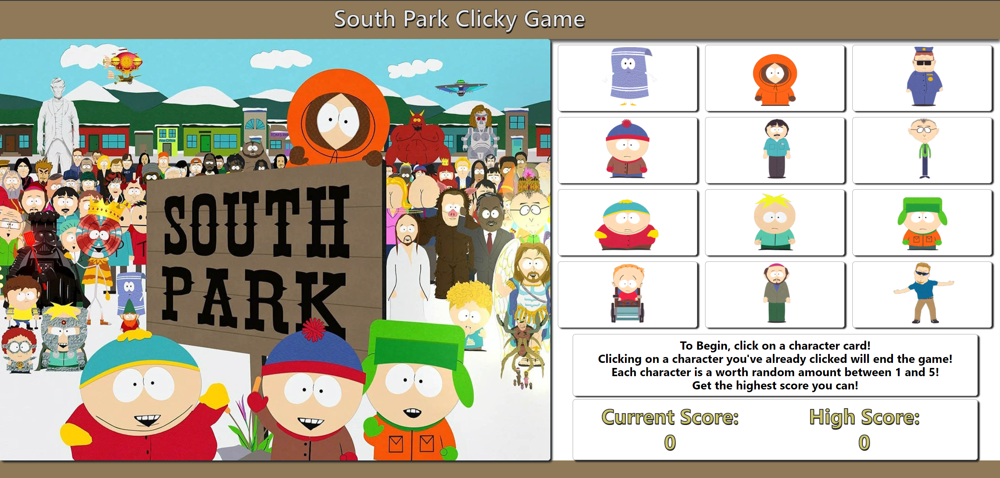

Full-Stack Software Engineer • UNC Bootcamp • SNHU CS Alum
Throughout my time in the Computer Science program at SNHU and my professional work as a full-stack developer, my primary focus has been bridging client-facing user experiences with robust, scalable backend architecture. My journey in web development—from completing the UNC Coding Bootcamp to mastering full-stack engineering—has built a strong foundation in modern frontend state management, REST API design, database security, and algorithmic performance.
What drives me as a software developer is continuous learning and solving complex problems. Whether refactoring legacy interfaces into modern Angular Signals, optimizing MongoDB query pipelines for enterprise pagination, or integrating cutting-edge LLMs with low-latency embedded systems, I approach software engineering with a performance-first and security-conscious mindset. Moving forward, my goal is to continue leveraging modern full-stack web architectures and emerging technologies to build intuitive, high-impact applications that deliver real value.
Originally developed during coursework in full-stack web development (CS-465), Travlr Getaways served as a baseline single-page application designed for managing travel inventory and user accounts. For my CS499 Computer Science Capstone, I systematically refactored and enhanced the platform across three core computing areas:
Refactored legacy UI components into Angular Reactive Forms & Signals. Introduced a side-by-side master-detail dashboard with dynamic form state toggling.
Replaced naive client-side sorting with server-side MongoDB $toDouble query pipelines, limit-offset logic, and paginated metadata processing.
Designed automated Mongoose audit log schemas, compound query indexes, and strict JWT Express middleware for administrative access control.

An enterprise administrative portal refactored with modern reactive architecture. Includes real-time audit logs, server-side data aggregation pipelines, dynamic UI state handling, and secure RBAC access controls.
Angular Signals & Reactive Forms
MongoDB Pipeline & Express Middleware
JWT Authentication & Audit Logs

A full-stack tracking application built to support mental health and daily wellness routines.

Collaborative full-stack application designed for tracking personal health and wellness metrics.

Group project translating news articles on the fly, integrated with user auth and database storage.

Web application designed for translating international news content across languages.

Full-stack React application querying Google Books API with database persistence.

React memory game testing character clicks with dynamic component state handling.